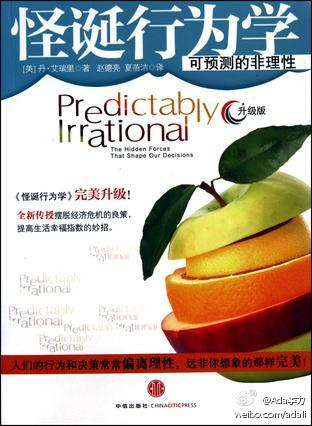

读过《怪诞行为学》 ★★★★ “社会规范和市场规范的论述, 非常适合来解释开源社区. 开源社区用社会规范来运作比较好, 如果引入市场规范, 就是即时交易, 等价交换, 那么社会规范会退却, 而以后即使取..” 网页链接 
最近读到《怪诞经济学》里才知道确实有这么一种现象： 为什么我们白干活高兴，干活赚钱反而不高兴？ 为什么你愿意免费做义工，给补贴却不愿意做了？ - 技术社区里的社会规范与市场规范_Ada李力_新浪博客 网页链接
我还是喜欢这种以理科生思维方式去考证的方式, 虽然那个敲铁球老人的故事很不错. "在此模型下，老人就算敲上一辈子，铁球也动不了。。。。"【原创】我也来松鼠会——成功学故事考证：敲铁球的老人 - zealangel的日志 - 网易 网页链接
把国粹麻将介绍得这么有西化, 还是第一次见. "而我现在要向大家介绍的是一款在企业主和高级经理人之间非常流行的商业竞争游戏，它的真实性和激烈性不亚于真正的商业活动" - 转载：我知道的一个商业模拟游戏 - zealangel的日志 - 网易博客 网页链接
看来是共生现象。有个爸爸不满意儿子太阴柔，说是受妈妈的影响，当时我问是否妈妈太温柔了。那爸爸说：不是，是妈妈太暴躁，儿子只好阴柔。//@紫羊子:我身边特别能说的母亲, 其孩子一般比较沉默; 而不怎么说话的家长, 反倒有很能说的孩子.@Ada李力:姣姣不太爱说话，有时候受了委屈都不说出来，我以为是性格的缘故。今天道听途说得知一家长评论：“姣姣妈妈太能说了，孩子怎么都说不过她，于是干脆就不说了”。

 网页链接
网页链接